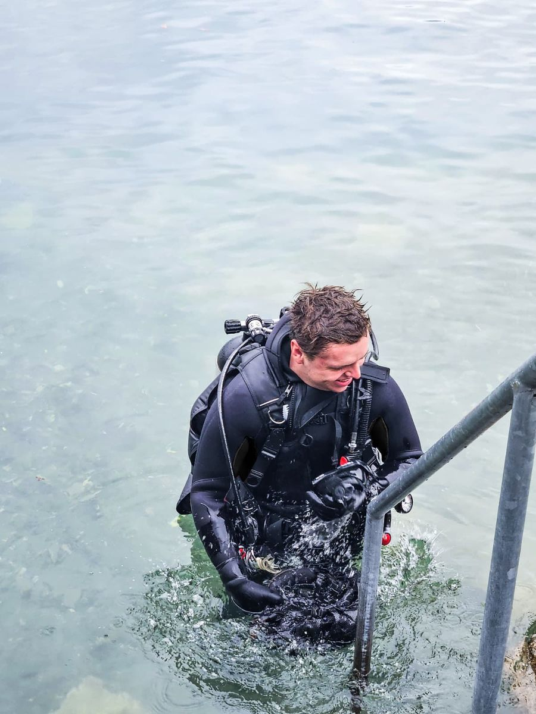
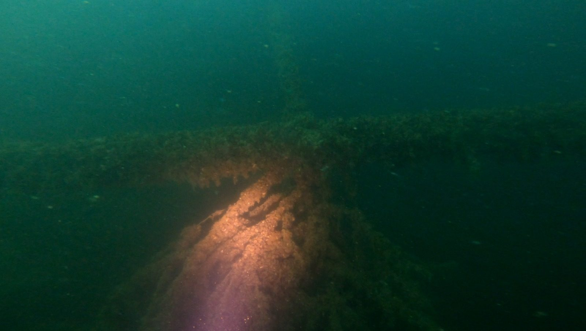

Spezialisiert auf Arbeiten in Schweizer Gewässern.
Industrietaucher.ch mit Sitz in Luzern verbindet professionelles Tauchen mit technischer Ausbildung.
Klein, spezialisiert, direkt erreichbar
Wir betreiben industrietaucher.ch für Aufträge von Behörden, Werken und Industrie sowie notfalltaucher.ch für dringende Einsätze.
Unser Schwerpunkt sind Süsswasser-Einsätze in Seen, Flüssen und Becken: kaltes Wasser, oft schlechte Sicht, schlammiger Grund und Tiefen bis weit über 40 Meter. Diese Bedingungen verlangen andere Erfahrung und Ausrüstung als Einsätze im Meer.
Sie sprechen bei uns mit der Person, die den Einsatz plant und ausführt. Das macht Abklärungen kurz und Entscheide schnell.

Ausbildung und Berechtigungen
Nachweise legen wir öffentlichen Auftraggebern auf Anfrage vor.
Industrietaucher
Ausgebildeter Industrietaucher mit Praxis in Inspektion, Suche, Bergung und Montage.
Sprengmeister
Zertifizierter Sprengmeister mit Sprengberechtigung Schweiz.
Konstrukteur
Gelernter Konstrukteur. Grundlage für Engineering, Konstruktion und technische Beurteilung.
Technisches Tauchen
Erfahrung mit Nitrox und Trimix für Tiefeneinsätze, dokumentiert bis 65 m.
Seilzugang
Kombination von Seilzugang und Tauchen an Felswänden, Schächten und Steilufern.
ISO-Zertifizierung
Die Zertifizierung des Managementsystems ist in Vorbereitung.

Dokumentiert bis 65 m, auch in Wracks und bei Nullsicht.
Mit Nitrox und Trimix, redundanter Ausrüstung und klaren Abbruchkriterien.
Material für Süsswasser-Einsätze
- TauchgerätTechnisches Open-Circuit-Gerät, Backplate oder Sidemount, redundant ausgelegt
- AtemgaseLuft, Nitrox und Trimix je nach Tiefe
- SchutzTrockenanzug für kaltes Wasser und lange Einsätze
- Dokumentation4K-Kamera, LED-Beleuchtung, Oberflächenmarkierung für GPS-Positionen
- WerkzeugHand- und Spezialwerkzeug für Montage, Reinigung und Suche
Kein Einsatz ohne Sicherheitskonzept
- GefährdungsbeurteilungVor jedem Einsatz: Tiefe, Strömung, Einläufe, Verkehr und Wetter.
- Eigen- und FremdsicherungSicherung und Kommunikation je nach Einsatz, zum Beispiel über Signalleine.
- AbbruchkriterienKlare Regeln, wann ein Einsatz unterbrochen wird.
- Absprache vor OrtSicherheitsanweisungen gelten für alle Anwesenden.
Schweizweit, mit Schwerpunkt Zentralschweiz
Mobilisierung ab Luzern. Regelmässig im Einsatz an diesen Gewässern:
Lernen Sie uns kennen
Den Überblick über alle Leistungen gibt es auch als PDF.